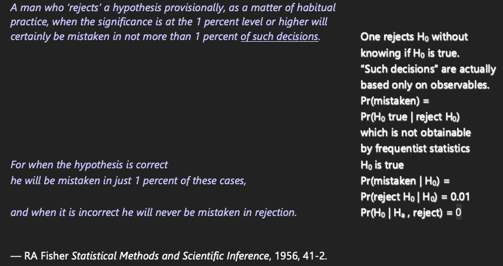

22 Controlling α vs. Probability of a Decision Error
Asking one to compute type I assertion probability α for a Bayesian design is like asking a poker player winning $10M/year to justify his ranking by how often he places bets in games he didn’t win.
Discounting a result because of long-run operating characteristics (controlling α) is analogous to one making a $10 bet and offering to pay $8 when his team lost, saying “My team might have won”.
The probability of being wrong in asserting an effect depends on the amount of evidence for the effect, just just on whether the amount of evidence exceeds some threshold.
How Often Do We Assert an Effect vs. How Often Are We Wrong About an Effect

Do you want the probability of a positive result when there is nothing? Or the probability that a positive result turns out to be nothing?
Type I error rate is not a rate and is not the probability of an error. It is the probability of making an assertion of an effect when any such assertion is by definition wrong.
You cannot call something an error by assuming the very fact that would make it one.
Fisher’s glaring error
A man who ‘rejects’ a hypothesis provisionally, as a matter of habitual practice, when the significance is at the 1 percent level or higher will certainly be mistaken in not more than 1 percent of such decisions. For when the hypothesis is correct he will be mistaken in just 1 percent of these cases, and when it is incorrect he will never be mistaken in rejection.
— RA Fisher Statistical Methods and Scientific Inference, 1956, 41-2.
Fisher failed to recognize that ‘of such decisions’ is not conditional on H0 and he confuses P(H0 | p < 0.01), with P(p < 0.01 | H0)

Optimum α from Bayesian decision analysis: 0.24 for terminal illness with no existing therapies; 0.01 for less deadly diseases
— Isakov et al, J Econometrics 2019, 117-136
There is much confusion about “controlling type I error” and “spending α”. One often hears
- highly experienced, competent statisticians saying that α is the probability that a result is false
- highly experienced, competent clinical trialists say that α needs to be controlled because it is the probability of being wrong in concluding that a drug is effective
Neither of these is correct, as will be explained below. It is also explained that Bayesian posterior probabilities provide exactly the probability that a result will turn out to be false–the probability that is sought by decision makers.
Technical details, more examples, and references concerning what is covered in this chapter may be found here, here, and here.
22.1 Background
Traditional frequentist statistics involves
- computing probabilities about data if an assumption about the unknown effect holds
- at the expense of having to subjectively translate probabilities about data extremes given a single possible effect to conclusions about unknown effects
Bayesian statistics involves
- computing direct probabilities about unknown effects, taking the current data as given
- at the expense of having to subjectively specify an informed belief about the unknown effect—a prior distribution
- Type I assertion probability α (usually called Type I error rate) plays an important role in traditional frequentist statistical inference
- especially in the Neyman-Pearson paradigm where formal rules for rejection and non-rejection of a null hypothesis were attempted to be constructed
- Growing interest in using the Bayesian paradigm in biomedical research
- But many regulators and researchers want the statistical procedure to also have frequentist operating characteristics e.g. α
- oddly they never ask for the Type II probability β which will often be better with Bayes
- Bayesians do not ask users of purely frequentist procedures to demonstrate Bayesian operating characteristics
- but it would be highly valuable to know the probability that the traditional procedure makes the right decision about a treatment
- Mixing Bayesian and frequentist ideas in the same analysis results in confusion while lowering the probability of reaching the correct conclusion
- Misunderstandings began when α was called “Type I error” when it is not the probability of making an error but rather is the probability of making an assertion of an effect
- α is not a decision error probability so it is not correct to attach the word error to it
- It is the probability of triggering an assertion of an effect
22.1.1 Definitions
False positive: a positive result that is incorrect
- in medical diagnosis the most common definition for false positive is a patient known to have no disease who tests positive for disease
- this is subtly different from a patient with a positive test whose disease status is unknown at the time but who turns out later to be disease-free; here we do not condition on the patient being disease free
- in medical diagnosis the most common definition for false positive is a patient known to have no disease who tests positive for disease
False positive probability
- the time order of information is extremely important
- do you want the probability of a positive result when there is nothing? or the probability that a positive result turns out to be nothing?
- usual definition is P(test + | no disease) which is 1 - specificity
- This is much different from the probability that a positive finding turns out to be wrong, which is P(disease absent | positive test) = 1 - PPV (predictive value positive)
- the time order of information is extremely important
What is needed in making decisions about a treatment: the probability that a positive result is wrong, e.g., that a result indicating an effect in the right direction actually comes from a treatment that truly has no effect or that has effect in the wrong direction
- e.g. a hypertension drug raises blood pressure
- this is much different from α (defined below)
- α is not the probability of a decision error
- α is not what decision makers think they are getting
- e.g. a hypertension drug raises blood pressure
Assertion: a statement that something is the case
p-value: probability of getting, in another study, a result more impressive than that observed in the current study given the true effect is zero1
- result can equivalently mean a summary statistic or a test statistic that is a function of the summary statistic
- More formal definition: p-value is the probability under identical replicates of the current experiment, except that the true effect is zero, of getting a result more extreme than that obtained2
- A very informal definition: probability of someone else’s data being more impressive than mine given my null hypothesis is true for them
- result can equivalently mean a summary statistic or a test statistic that is a function of the summary statistic
Type I assertion probability α: under the condition that the effect is exactly zero (e.g., that the treatment can be ignored), the probability of asserting an effect
- α is the probability under identical replications of an experiment, when the true effect is zero, of asserting an effect in a replication (sample)
- probability that a test statistic is greater than some critical value when the null is true
- if assertion of effect is made when a nominal p-value < α, the model is correct, and there is exactly one data look, then P(p-value < α) = α
- if there is more than one data look, testing using a nominal (unadjusted) p-value will result in P(p-value at at least one look < α) > α
- α = probability of making an assertion of an effect when by definition any assertion of an effect would be false
- analogy: suppose that everything that a politician says is false and we rate the worthiness of the politician by the proportion of the time that he is talking
Bayesian posterior probability of effect: the conditional probability that the effect is in the right direction given the prior and the current data
False positive probability: one minus the Bayesian posterior probability of effect
1 This is under standard null hypothesis significance testing where the hypothesized effect is zero.
2 One frequently reads “as or more impressive” or “as or more extreme”, but for continuous data the probability of getting data exactly as extreme as the study’s observed data is zero, so we may speak of the probability of “more extreme”.
22.1.2 Examples
- Posterior probability of a positive effect at the current data is 0.92
- Probability of being right in acting as if the treatment is effective is 0.92
- probability of being wrong is 0.08
- Bayesian probabilities contain their own decision error probabilities
- p-value = 0.06: under our model and null hypothesis the probability that a replicate study will observe data more extreme than ours is 0.06
- a statement that assumes something is true (H0) cannot inform us about the likelihood it is true
- p-value provides no direct information about the likelihood an assertion is true or false; it is a probability about data, not about hypotheses
- Smoke alarm analogy
- α is the probability that the alarm sounds when there is no fire
- false positive: alarm sounds but there turns out to be no fire
- false positive probability: P(no fire | alarm sounds)
- Bayesian posterior probability: P(fire | air characteristics)
- example Bayesian decision rule: sound alarm when P(fire | air characteristics) exceeds 0.025 when inhabitants are home and 0.01 when they are away
- if designed the way many clinical trials over optimistically assume an effect size: have an 0.8 chance of sounding the alarm if there is an inferno
- α is the probability that the alarm sounds when there is no fire
22.1.3 Replication
- At the heart of traditional statistics is the notion of replication or repeated sampling under identical conditions
- This leads to the notion of p-values and long-run operating characteristics
- p-value involves a comparison of current data with data that could be sampled in replicate studies
- α is the long-run probability of triggering an assertion of an effect over infinitely many samples
- It also places importance on replicating results
- When Ronald Fisher was asked how to interpret a large p-value his response was “get more data”
- he also said that a p-value from one-study, while helpful, needs to be confirmed with continued experimentation
- In urgent situations such as a pandemic, decisions need to be made quick
- results from one study are immediately affecting national policy in COVID-19
- Need to make decisions that have the highest probabilities of being correct
- this is what Bayesian posterior inference is all about, when stakeholders can settle on a prior or the sample size is large enough so that the prior doesn’t matter
- Even in non-emergent situations where a second study can be undertaken to confirm the first, decisions have to be made
- a key decision is whether it is worth undertaking the second study
- Replication is undeniably a good idea but it occasionally invites researchers to split a study into two studies when a single better study would provide better quality evidence
22.2 Perceived Multiplicities
Multiple statistical assessments happen when
- looking at the data multiple times as more subjects are enrolled
- looking a multiple treatments
- looking at multiple subgroups of subjects
- looking at multiple response variables
- In traditional statistics when one considers α as a global measure, α increases as more data looks, treatments, subgroups, or response variables are analyzed
- Multiplicities come from the chances you give data to be more extreme
- not from the chances you give assertions to be true
- Researchers using traditional statistics usually desire control of the overall α
- chance of making at least one assertion of an effect if the effect is zero over all times/treatments/subgroups/outcomes
- this in spite of the fact that α doesn’t involve any data
- subgroups are often of most concern
- Controlling α when making multiple sequential treatment comparisons is the most problematic multiplicity correction from a Bayesian perspective
22.2.1 Sequential Data Look Multiplicity Non-Issues with Bayes
Pattern Recognition Example
- Visual pattern recognition algorithm
- Goal: identify enemy tank from a distance
- Sampling: image recorded every 5 seconds
- Algorithm output: P(object is an enemy tank)
- First image acquired: P=0.6
- Object moves closer: P=0.8
- Weather clears: P=0.93
- Latest P is all that matters; earlier looks obsolete
- But frequentist approach deals with P(tank-like image acquired | object is not a tank)
- Higher sampling rate \(\rightarrow\) more tank-like images (\(\uparrow\) α)
- Not related to the decision at hand which is based on P(tank | last image)
Medical Diagnosis Example
- Specificity = P(test - | disease absent) \(\approx\) α
- PPV = P(disease present | test +)
- Physician orders a series of tests on the patient \(\rightarrow\) P(disease)=0.9
- Another physician worries because in general patients known to be disease free have P=0.2 that at least one of those tests is positive if disease is absent
- First physician reacts
- disease status is what I’m trying to determine
- test specificities do not require discounting the 0.9 and are unrelated to the decision process
Sequential Clinical Trial With Unlimited Data Looks
- Posterior probability of positive efficacy computed continually
- Assume the data model is correct and the prior is agreed upon
- \(\rightarrow\) posterior probability P at the planned end of study is valid
- If P at end of study is valid, all intermediate P’s are valid
- true even if P is the reason the study is stopped early
- P at the instant the study is stopped is well calibrated3
- Anyone who wants to see α for this procedure needs to realize that α is a pre-study concept that does not pertain to the current decision being made
- Instead of asking for α, attention should be focused on the choice of prior
- Miscalibration of P occurs if e.g. a reviewer wants to impose a prior that is much more/less skeptical of a positive effect than the prior used in the sequential monitoring4
- See this for demonstration via simulation
3 A skeptical prior distribution will shrink the treatment effect towards zero, with more shrinkage the earlier the study is stopped, appropriately calibrating the posterior mean/median. Traditional statistical analysis results in biased treatment effects upon early stopping for efficacy, and the bias adjustment is very complex.
4 Once the sample size becomes moderately large, the posterior probability P will be more and more independent of the prior unless an extreme skeptic places a discontinuity in the prior—a spike of probability at a zero effect.
22.3 Key Evidentiary Measure to Validate
- In Bayesian posterior inference the key quantity that needs to be reliable is the posterior probability (PP) of an effect at the decision point
- This is a function of
- the prior distribution
- the data model
- the data
- its validity also depends on the experimental design
- Frequentist inference depends on all of these except the prior
- Example from hbiostat.org/R/Hmisc/gbayesSeqSim.html (see there for code and details)
- Draw 1500 effects (log odds ratios) from a normal distribution with mean 0 and SD 0.5
- For each effect simulate a clinical trial with that effect in play
- Analysis prior is taken to be one that is more pessimistic than what was actually used to generate the true treatment effects (mean log(OR)=0, SD=0.35)
- Compute PP of effect after 25, 26, …, 100, 105, 110, 115, …, 1000 patients
- Stop the study as soon as PP > 0.95
- Compare the PP at the moment of stopping (decision point) to the true probability of efficacy = P(true OR < 1)
- Mean PP at time of stopping: 0.955
- Proportion of such stopped trials that were generated by an effective therapy: 0.985
- this is our estimate of true P(OR < 1)
- PP at decision point actually understated evidence for an effect
- This way of examining reliability of evidence is consistent with the Bayesian goal of uncovering whatever true parameter generated our data
22.4 Summary
- Bayesian posterior probabilities are directly used in the decision at hand
- Type I assertion probability α is not relevant for the current decision
- α is not the probability of making a wrong decision but is a long-run probability of asserting an effect when any assertion would by definition be wrong
- Bayesian posterior probabilities are self-contained, and 1 - P(positive effect) = P(treatment doesn’t work or moves the patient in the wrong direction given current data)
- Mixing Bayesian and frequentist probabilities is confusing to decision makers
- Attention needs to be focused on the specification of the prior, not on using complex simulations to compute α for a Bayesian procedure that does not use indirect probabilities